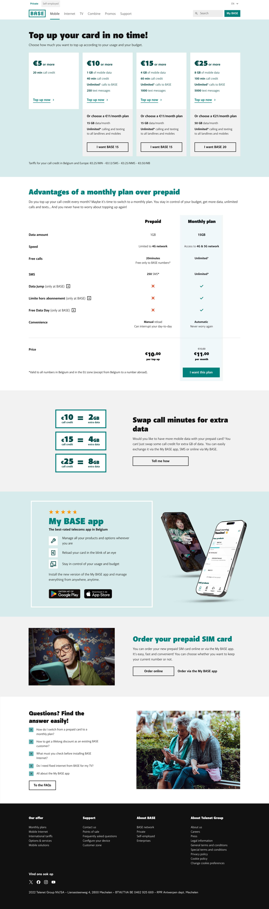
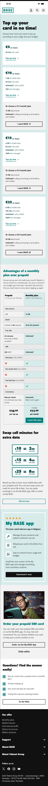
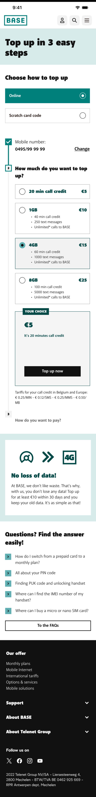
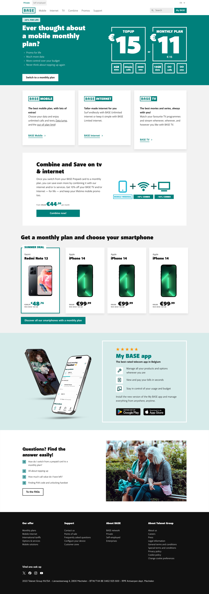
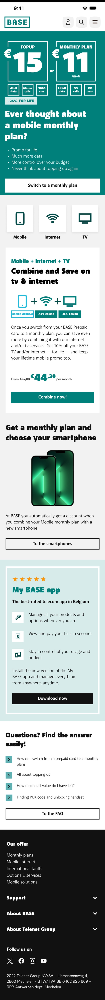

BASE · Telco · B2C · 2026 · 1 sprint
Converting prepaid customers
to postpaid through segmentation
Digital pre-to-post migration had been declining for months. No conversion flow existed. I redesigned the prepaid pages using segmentation to serve the right message to the right user at the right moment.
Sole Product Designer. Owned full process — funnel analysis, segmentation strategy, design, stakeholder alignment, launch. Worked with PM, dev, marketing, analytics.
Figma · Adobe Analytics · ContentSquare · Qlik
BASE's prepaid page treated every visitor the same. A loyal logged-in prepaid customer saw the same page as a prospect who'd never heard of BASE. No migration flow, no personalised value proposition, no nudge toward postpaid.
Migration had been declining since April 2025. The business cost was clear: every prepaid customer who didn't migrate was a missed opportunity for higher-value subscription revenue — and a missed gateway to Internet and TV upsell.
Convert existing prepaid customers into postpaid — BASE's primary product and the gateway to upselling Internet and TV. Every converted customer has significantly higher lifetime value.
14,708 total migrations in period · digital share ~38–41% · top plans: BASE 15 (5,719) and BASE 20 (4,215)
If we serve segmented, relevant content to the right audience at the right entry point — prepaid customers see migration offers, prospects see prepaid as an easy entry point — conversion and migration rates will increase.
Before designing, I analysed the funnel with Adobe Analytics and ContentSquare to find where prepaid users actually were — and where conversion opportunity was highest. Three entry points stood out:
Prepaid page — logged-in customers
Direct intent signal. Highest relevance for migration push.
Top-up page — logged-in customers
Highest traffic from prepaid users. Moment of transaction = moment of consideration.
Home page — prepaid segment
Users already in consideration mindset. Hero-level messaging opportunity.
Same URL, completely different first screen. Segmentation worked inside a single component via login state — no redirects, no new pages, no new code.
Logged-in prepaid user saw their current plan vs what postpaid would give them. Direct comparison, promo applied, CTA straight to configurator with plan pre-selected.
Prospect / not logged in saw prepaid as a low-friction entry point. No migration pressure. Simple pricing, fast activation.
Built entirely within existing components — no new development needed. 1 sprint from brief to launch.
Design — selected screens
01 — Prepaid page (logged-in prepaid customer)
Push toward migration: top-up options shown alongside "I want BASE 15/20" CTA. Comparison table prepaid vs monthly plan makes the value gap concrete.


02 — Top-up page (logged-in prepaid customer)
Standard top-up flow with migration nudge. Users in transaction mode — shown what they could have instead.


03 — Home page (segmented for prepaid)
Most direct conversion screen: hero with −25% for life promo, €15 top-up vs €11 monthly plan comparison, "Switch to a monthly plan" CTA. Also surfaces Internet & TV upsell opportunity.


Why segmentation instead of a dedicated migration page?
A separate page would require users to find it. Segmentation meets users where they already are — at the moment they're already thinking about their plan. No extra navigation, no extra intent required.
Why show the price comparison in the hero?
The core barrier wasn't awareness — users knew monthly plans existed. The barrier was perceived value. Showing €15 top-up vs €11/month with more data made the decision concrete, not abstract.
Digital pre→post migrations by month
New segmented page GO LIVE — July 2025
Before — June 2025
After — July 2025
Revenue
14,708 low-margin transactional users converted to predictable MRR — each now cross-sell-ready for Internet and TV
Behaviour
Top-up journeys dropped 38%. Users redirected toward postpaid pages and configurator — intent confirmed by 3 tools
What I'd do differently
Set up a proper A/B test framework before launch. We measured correlation well — but formal experimentation would have made causality bulletproof
What I learned
Segmentation is a trust mechanism. Relevant content converts because it makes users feel understood — not sold to